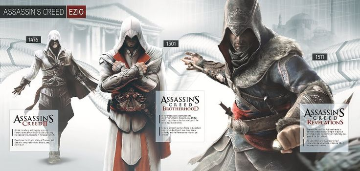

Assassin's Creed Triología de Ezio
Assassin's Creed: The Ezio Collection es una colección comprendida de versiones
gráficamente realzadas de juegos que presentan a Ezio Auditore da Firenze.
El juego saldrá al público el 15 de noviembre de 2016 en los Estados Unidos, 17 en
España y el 18 en el Reino Unido para PlayStation 4 y Xbox One.
Descripción
En Assassin's Creed: The Ezio Collection vendrá toda la vida del Maestro Asesino Ezio
Auditore da Firenze, el líder mas inconico de la Hermandad de Asesinos, que busca la
venganza por la traición contra su familia en un tiempo de avaricia, corrupción y
conspiración cruel.
Uniendo todos los juegos de esta trilogía, se podrían hacer 80 horas de gameplay con
gráfica realzada, The Ezio Collection trae los videojuegos de la Vida de Ezio por
primera vez a Xbox One y sistema PlayStation 4.
Incluye:
Assassin's Creed: Brotherhood
Assassin's Creed: Revelations
Todo el contenido del complemento del jugador solo son las maletas para los tres
juegos incluidos.Assassin's Creed: The Ezio Collection es una colección comprendida
de versiones gráficamente realzadas de juegos que presentan a Ezio Auditore da
Firenze. El juego saldrá al público el 15 de noviembre de 2016 en los Estados
Unidos, 17 en España y el 18 en el Reino Unido para PlayStation 4 y Xbox One.
En Assassin's Creed: The Ezio Collection vendrá toda la vida del Maestro Asesino
Ezio Auditore da Firenze, el líder mas inconico de la Hermandad de Asesinos, que
busca la venganza por la traición contra su familia en un tiempo de avaricia,
corrupción y conspiración cruel.
Uniendo todos los juegos de esta trilogía, se podrían hacer 80 horas de gameplay
con gráfica realzada, The Ezio Collection trae los videojuegos de la Vida de Ezio
por primera vez a Xbox One y sistema PlayStation 4.
Assassin's Creed II
Assassin's Creed: Brotherhood
Assassin's Creed: Revelations
Todo el contenido del complemento del jugador solo son las maletas para los tres
juegos incluidos.

Altaïr fue el primer miembro de la hermandad de asesinos que conocimos y sí, nos
conquistó por su porte y su carisma. Pero lo mejor estaba por llegar y el
enigmático asesino dio paso a un descendiente italiano que acabaría proclamándose
como el auténtico amo de la franquicia: Ezio Auditore. Al italiano le debemos los
tres últimos juegos de la franquicia y es que prácticamente hemos vivido toda su
vida junto a él. Ahora, con el inminente lanzamiento de ‘Assassin’s Creed III’ y
el relevo generacional a manos de Connor puede ser un buen momento para repasar
todo por lo que lucho Ezio en sus innumerables aventuras.
Por eso y de forma exclusiva para PlayStation 3 se lanza la ‘Assassin’s Creed
Ezio Trilogy’. Los tres videojuegos protagonizados por Ezio, ‘Assassin’s Creed II’
(con todo el contenido descargable que se realizó para él), ‘Assassin’s Creed:
Brotherhood’ y ‘Assassin’s Creed: Revelations.
AC trilogy
Llegará a las tiendas norteamericanas el 13 de noviembre a un precio de 39,99
dólares. De momento no tenemos confirmación oficial por parte de Sony de que la
trilogía acabe llegando también a Europa. Damos por hecho que acabarán lanzándola
y que es sólo cuestión de tiempo que confirmemos la noticia, pero por si acaso mejor
sed precavidos. Una trilogía que repase los tres juegos de Ezio, ¿se veía venir no?
En cualquier caso es una buena oportunidad si no pudisteis adquirir los tres títulos
en su momento.
Trailer de triología